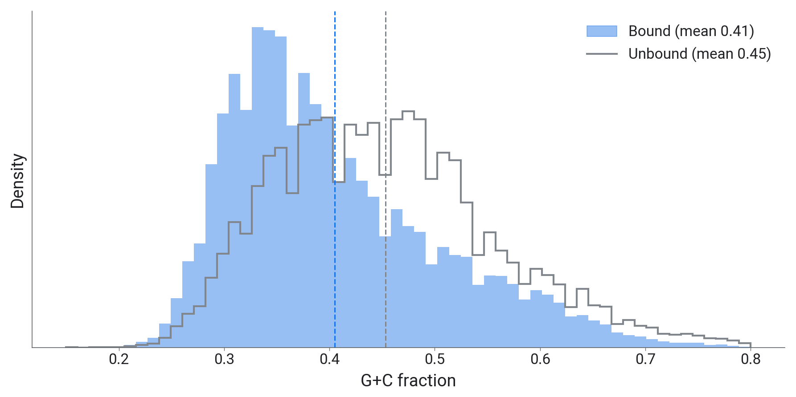
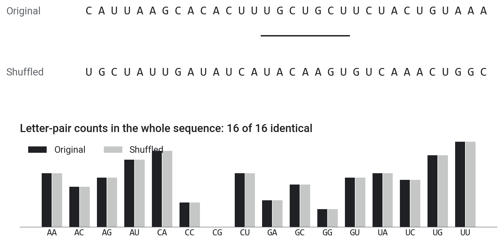
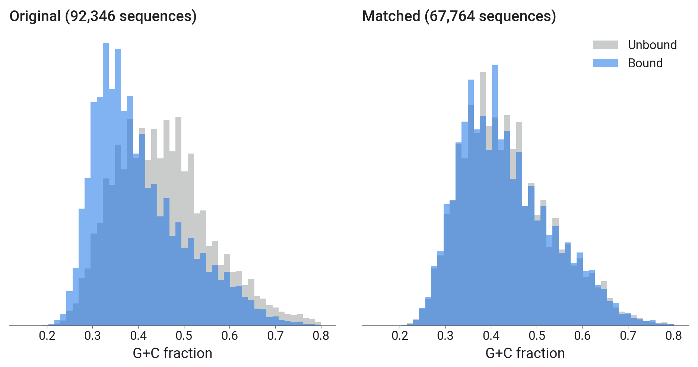
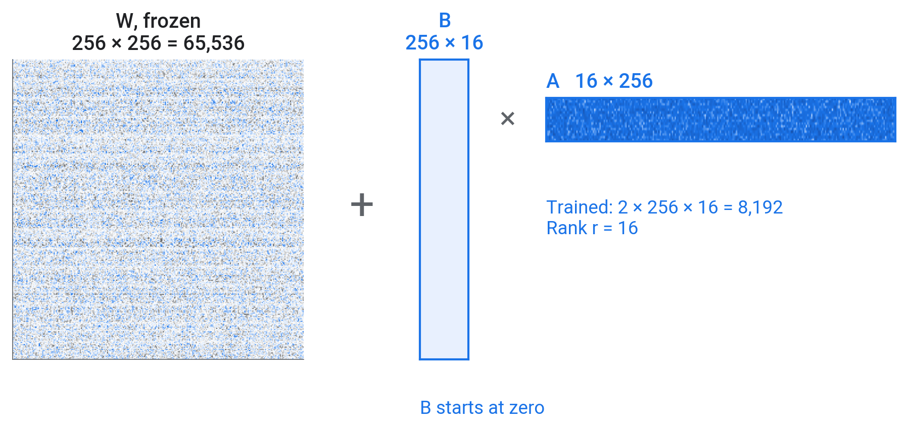
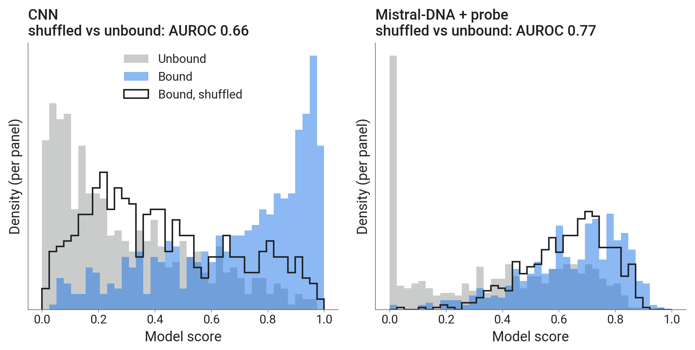
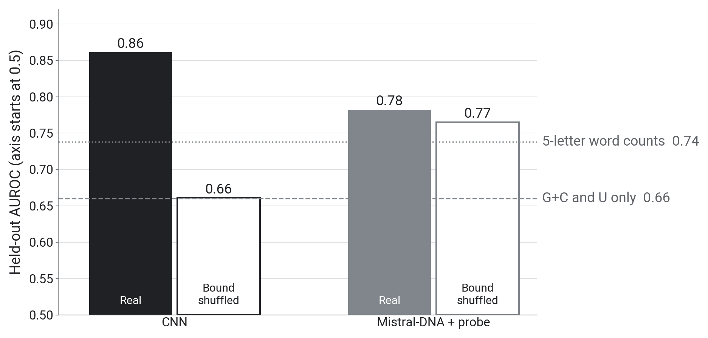
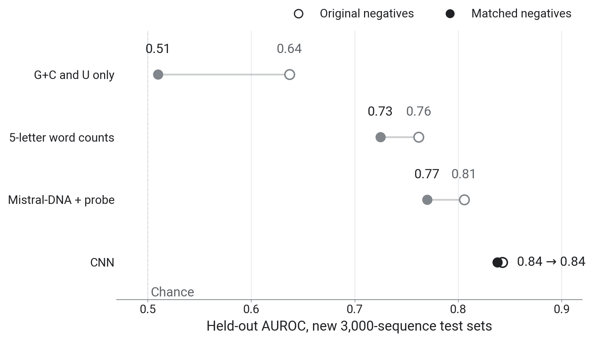
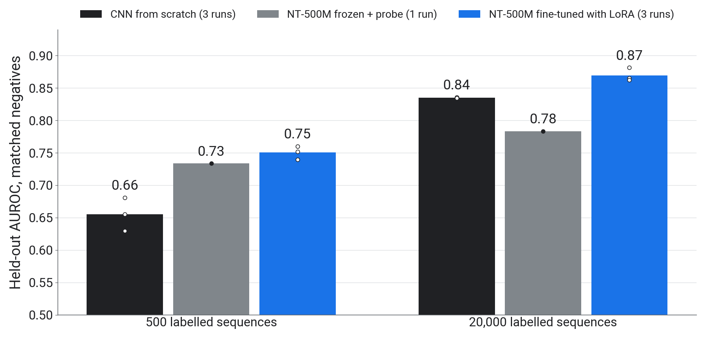
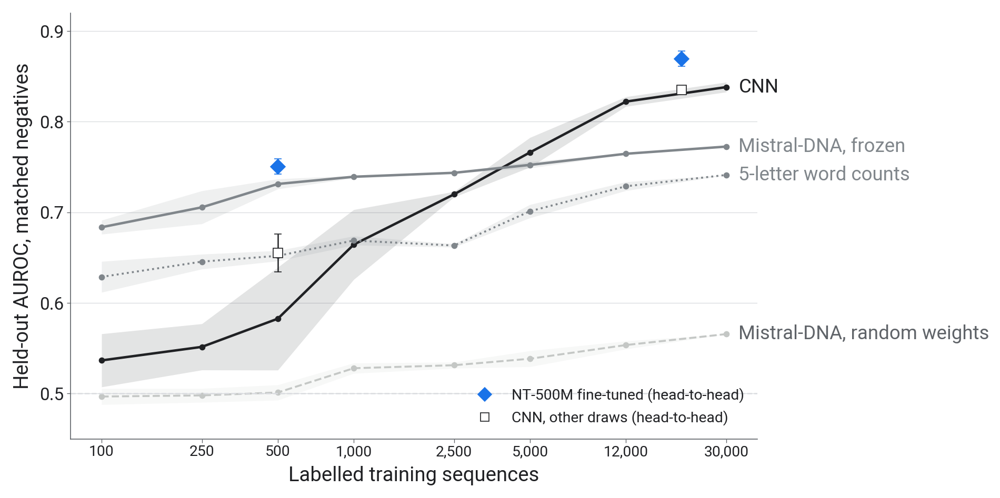
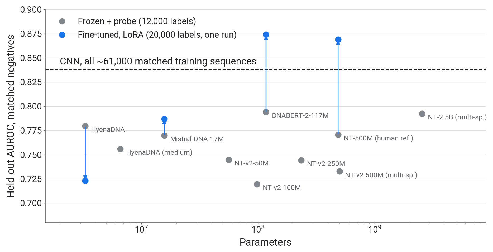

Teaching Machines to Read DNA
Part 3: Shortcuts, controls and fine-tuning
AI Days 2026
Faculty of Biotechnology and Food Engineering
Technion Israel Institute of Technology
Mattan Hoory
1 Simpler explanations
1.1 The two classes differ in composition
- A shortcut is a simple property that differs between the classes in this data set, such as G+C
- Before crediting a model with biology, measure what much simpler features achieve

1.2 The dinucleotide shuffle test
- A dinucleotide is a pair of neighbouring letters. The shuffle keeps every letter and dinucleotide count and scrambles everything longer, including where sites sit

2 A control
2.1 Composition-matched data
- Bin every sequence by G+C, U and length; in each bin keep as many unbound as bound
- Bound and unbound then have the same single-letter composition and length; letter pairs and longer words can still differ

3 Fine-tuning
3.1 Four ways to adapt a pretrained model
| Method | Trained | Cost |
|---|---|---|
| Linear probe | a new output layer only (after one pass to compute embeddings) | seconds to minutes |
| Partial fine-tuning | the output layer and the top layers | minutes |
| Full fine-tuning | all weights | minutes to days, with model size |
| LoRA | small low-rank matrices added to each layer | minutes |
3.2 LoRA
\[W x \;\rightarrow\; (W + BA)\,x, \qquad B \in \mathbb{R}^{256 \times r},\; A \in \mathbb{R}^{r \times 256},\; r = 16\]

4 Hands-on
4.1 Your turn
Open 03_shortcuts_and_controls.ipynb. In the rejoin cell at the end of section 0, set USE_MY_FILES = True to upload your CNN and vectors, or keep False to use ours.
| Step | Task | Check | Time |
|---|---|---|---|
| TODO-1 | AUROC from G+C and U | about 0.66 | 6 min |
| TODO-2 | AUROC from 5-letter word counts | about 0.74 | 4 min |
| TODO-3 | shuffle test on the CNN and the probe | about 0.66 and 0.77 | 10 min |
| TODO-4 | shortcut_scores() on both test sets |
G+C/U 0.64 → 0.51, probe 0.81 → 0.77 | 12 min |
| TODO-5 | the LoRA training step | about 0.81 | 11 min |
- Given cells (setup, CNN retrain, before and after, take-aways): about 10 min. Total about 53 min
5 What broke, what survived
5.1 Scores before and after shuffling

5.2 Shuffling lowers the CNN, barely moves the probe

5.3 Discussion
- How much of each score do two composition numbers explain?
- Which model barely changed after the shuffle, and what does that say about what it uses?
- Which part of the G+C difference could be AGO2 biology (3′ UTRs are A/U-rich), and which part could come from how the unbound positions were drawn?
5.4 Before and after matching

5.5 Fine-tuning against the CNN

5.6 Test AUROC against the number of labels

6 Wrap-up
6.1 The day in nine results
| Part | Finding | Number |
|---|---|---|
| 1 | seed-site words are enriched in bound sites | miR-19 site UUUGCAC 6 times enriched, in 1–2% of bound sites |
| 1 | a CNN trained on 92,346 sequences | held-out AUROC 0.86 |
| 1 | it responds to one inserted seed site | miR-15/16: 0.53 vs 0.31 shuffled |
| 1 | it weighs position | effect only at letters ~140–190 |
| 2 | frozen pretrained models + probe | 0.78–0.79 |
| 3 | two composition numbers alone | 0.66 |
| 3 | after a dinucleotide shuffle | CNN 0.86 → 0.66, probe 0.78 → 0.77 |
| 3 | composition-matched data | G+C/U 0.64 → 0.51, CNN 0.84 → 0.84 |
| 3 | Mistral-DNA fine-tuned with LoRA (20,000 labels) | 0.81 on matched data, frozen 0.77, CNN 0.84 |
6.2 Ten pretrained models on matched data

6.3 Five points to take home
- Here the negatives were random positions in the same genes, and G+C and U alone separated them from bound sites with AUROC 0.66 (1,000 held-out sequences)
- The encoding limits what a model can use: one-hot letters keep order and position, 5-letter word counts drop both, and each tokenizer splits the same seed site differently
- Check simple baselines first: on the 1,000 held-out sequences, two composition numbers reached 0.66 and 5-letter word counts 0.74 (12,000 labels each), against 0.86 for the CNN (92,346 labels)
- Test what a model uses with controls: insert a motif against a shuffled copy, shuffle the input, match the negatives
- Frozen Mistral-DNA with a probe scored 0.77 on the 3,000-sequence matched test set, and 0.77 against 0.78 under the shuffle. In one offline benchmark on the same test set, NT-500M fine-tuned with LoRA reached 0.87 against the CNN’s 0.84 (20,000 labels, 3 runs each); it has not been shuffle-tested
6.4 When to use a pretrained model
- Below about 2,500 labels: a frozen pretrained model with a probe beat the CNN on this task
- With 20,000 labels: fine-tuned NT-500M (0.87) beat the CNN (0.84) in one offline benchmark (3,000 matched test sequences, 3 runs each); keep a small task model as the baseline
- Not tested today: scoring mutations (variants) without labels by how unexpected the model finds them (published results are mixed)
6.5 From a question to a model
- Question: what should the model predict, and which experiment gives the labels?
- Negatives: how were they chosen, and what else differs between the classes?
- Baselines: what do composition and word counts already achieve?
- Model: train on the task, or adapt a pretrained model (depends on the number of labels)
- Controls: insert, shuffle, match; report held-out scores with their uncertainty
6.6 Feedback
- Two minutes: what should change for your background?
- forms.gle/NfE6ZHj98ri3WYmG6
- Notebooks and slides stay online: github.com/mathoory/ai-days-2026-dna-workshop
6.7 Credits and further reading
- Data: Maticzka et al. (2014) GraphProt, Genome Biology (the CLIP benchmark and its negatives). Pan and Shen (2018) iDeepE, Bioinformatics (the CNN design we follow).
- I. Ullah, KAUST Genomic Foundation Models workshop (2026): pipeline ideas, used with permission. github.com/bioinfo-kaust/gfm-workshop
- R. Mourad and B. Batut, Galaxy Training Network: pretraining and fine-tuning an LLM on DNA (CC-BY); R. Mourad (2024), Mistral-DNA models.
- Dalla-Torre et al. (2024) Nucleotide Transformer, Nature Methods. Zhou et al. (2024) DNABERT-2, ICLR. Nguyen et al. (2023) HyenaDNA, NeurIPS. Nguyen et al. (2024) Evo, Science. Brixi et al. (2025) Evo 2.
- Hu et al. (2021) LoRA. Tang and Koo (2024) Evaluating the representational power of pre-trained DNA language models for regulatory genomics.
- Altschul and Erickson (1985) dinucleotide shuffle. Tareen and Kinney (2020) logomaker. Friedman et al. (2009) Most mammalian mRNAs are conserved targets of microRNAs, Genome Research. Chin et al. (2008) A SNP in a let-7 microRNA complementary site in the KRAS 3′ untranslated region increases non-small cell lung cancer risk, Cancer Research.